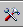

Calibre RealTime Integrated Toolbar (Virtuoso)
The Calibre RealTime integrated toolbar is shown in the following figure.
The run controls, highlight controls, and options controls are described in the following sections.
For 2015.1 and earlier releases, the toolbar included a dropdown list of the ten most recent run contexts. Beginning with the 2015.2 release the run context is no longer displayed by default. Define the environment variable MGC_CALIBRE_REALTIME_SHOW_CONTEXT_IN_TOOLBAR to restore the run context display.
Run Controls (Virtuoso)
The run controls in the Calibre RealTime integrated toolbar start a window run and zoom to the window for the most recent DRC run.
Toolbar item |
Description |
|---|---|
(Run DRC ) |
Runs flat DRC using the selected DRC Run Type. Calibre runs with the currently selected Run Configuration and configuration run mode (Serial or Single). Keyboard shortcut: F12 |
DRC Run Type |
Selects the DRC run type:
|
Zoom to the window of the most recent DRC run. |
|
DRC hier levels mode |
Specifies the DRC Hierarchical Levels Mode:
|
Highlight Controls (Virtuoso)
The highlight control section the Calibre RealTime integrated toolbar includes highlight controls and displays the rule check for the current result.

Toolbar item |
Description |
|---|---|
|
Highlight all. |
|
Clear all highlights. |
|
Highlight previous, current, or next result for the rule check. Also see Behavior of "Group highlight colors by check" in “Calibre RealTime Options Dialog Box”. |
Result n of total results. Also see the setting “Show results in” in the Calibre RealTime Options Dialog Box; this setting determines whether all results for the cell or only results from the most recent run are reported. |
|
Rule check |
Indicates the rule check which produced the displayed error when using the highlight previous, current, and next buttons. Use the dropdown arrow to select a different rule check. |
Highlight all results from the selected rule check. |

Option Controls (Virtuoso)
The option controls in the Calibre RealTime integrated toolbar select the check recipe and open the Calibre RealTime Options dialog box.
Toolbar item |
Description |
|---|---|
|
Remove the displayed
rule check from the current check recipe. All highlights are cleared, regardless
of the setting of “Clear Existing Highlights” in the If the recipe is a built-in recipe, you are prompted to save the new check recipe to a new filename; if the recipe is a user recipe, the updated recipe is saved automatically. |
|
Open the Calibre RealTime Results window. See “Viewing Results in the Calibre RealTime Results Window”. |
Options dropdown menu |
|
|
Open the Calibre RealTime Options Dialog Box. |
 |
Open the Customization GUI. This button is only available if a Calibre Interactive runset is loaded and includes a customization file. See “Using the Customization GUI with Calibre RealTime”. |
Run Configuration |
Selects the run configuration, both for a run in “Single” mode and for viewing results; see “Specifying and Using Multiple Run Configurations in Calibre RealTime (Virtuoso)”. |
Check recipe |
Select the check recipe from the dropdown list; the check recipe specifies the rule checks executed for all Calibre RealTime runs. See “Check Selection Recipes in Calibre RealTime Custom” for more information. |